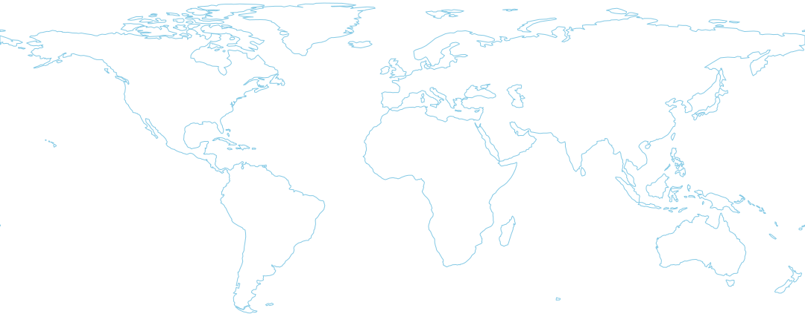

NORAD / COMMAND & CONTROL00:00:00 Z
STRATEGIC SIMULATION / JOSHUA
GLOBAL
THERMONUCLEAR WAR
DEFCON5
GLOBAL SURVEILLANCE90° N ─────────────── 90° S

UNITED STATESSOVIET UNIONNORTH ATLANTICWOPR SATCOM
LINK 04 / ACTIVE
LINK 04 / ACTIVE
180° W 0° 180° E
YOUR SIDEUNASSIGNED
TRACKS000
ELAPSED00:00:00
STATUSAWAITING INPUT
JOSHUA / INTERACTIVE SESSION●